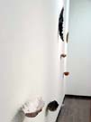
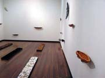
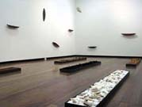
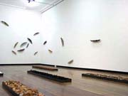
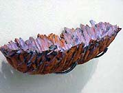
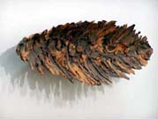
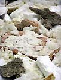
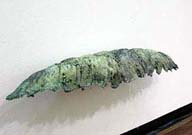
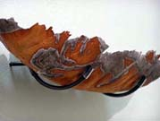

| Gudrun Klix
Australian ceramist.
AIRSCAPE/ LANDSCAPE
Click images to enlarge. Taken at
a recent installation at the Sydney College of the Arts, Sydney,
Australia. Images & text courtesy Gudrun Klix.
This work is inspired by the desert landscape around Alice Springs,
Central Australia, where Klix made various excursions in a 4 wheel
drive and small airplanes, flying over the landscape, exploring,
photographing and collecting material for my work.
The
resulting work is an installation that consists of a large group
of related ceramic pieces mounted on the walls and a series of five
steel trays on the floor. The trays contain materials collected
and brought back to Sydney from the outback: sand, rocks, saltpan
from lakes, bark and charcoal, some of which were brought back in
suitcases and bags.


The
ceramic pieces are loosely based on land forms as viewed from the
air. While they share an overall similarity in shape, Klix was interested
in constructing work that had varied and multi-layered references.
The pieces walls pieces are in varying orientations, groupings and
changing planes. Klix was interested in creating a space that would
take the viewer on an aerial-like journey, providing a metaphorical
view from above without leaving the gallery. In the air we gain
a new perspective, as we are distanced from the land. We see new
colors, forms, textures, and experience the world in a wholly different
way. Likewise forms and shapes normally seen on the ground take
on a new meaning when viewed suspended in space or mounted on the
walls, and allow for a visual journey between layers and planes.
The myriad textures and colors of the pieces are designed to evoke
aspects of the landscape.


The
materials in the trays on the other hand are intended to ground
the viewer, bringing her/him back to the reality on the ground while
at the same time focusing attention on what we perceive daily, but
now with an altered vision.

The object of Klix' work is to reconnect with the land.
Gudrun
Klix is Sr. lecturer in ceramics at Sydney College of the
Arts, University of Sydney, Australia. Email: G.Klix@sca.usyd.edu.au.
More Artists of the Week
More Articles
|
{kind=link}
{kind=link}
{kind=link}
{kind=link}
{kind=link}
{kind=link}
{kind=link}
{kind=link}
{kind=link}